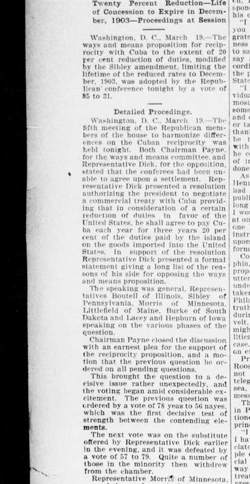
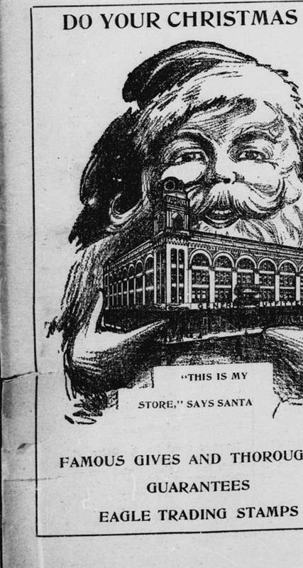
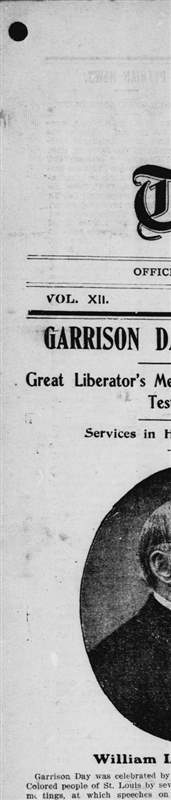

分类广告版索引
本辑收录 1938 到 1952 年间 46 份地方报纸的分类广告版，最旧的一份虫蛀掉了右下角。
- 辑号
46- 收录
- 1938–1952
- 编目
2026-02- 页数
- 1 至 462
实现参数：配色与对比度
正页目录 · 逐条按期号排列 · 斜线后的字母数字是本馆分类号
- 谷仓火灾保险赔付公告
1181951-07-14 · 分类G-4 - 缝纫机分期付款办法
441949-03-02 · 分类B-1 - 市政厅路面翻修招标
2011952-06-19 · 分类D-7 - 走失的栗色挽马寻主
121938-11-08 · 分类A-2 - 谷物行情与车皮调度
961947-09-30 · 分类C-3 - 教堂管风琴维修募捐
731946-05-21 · 分类E-1 - 五金行盘让存货清单
1321950-01-17 · 分类F-5 - 农场雇工按日计酬
281941-04-03 · 分类B-4 - 乳品合作社招股说明
1111948-12-11 · 分类G-2 - 二手福特卡车出让
191939-08-26 · 分类C-6 - 女子缝纫夜校开课
371943-02-15 · 分类E-9 - 剧院春季巡演排期
641945-10-07 · 分类A-5 - 木材场冬季清仓
1871952-01-23 · 分类D-2 - 药房夜间值班表
231940-06-12 · 分类B-7 - 铁路货运费率调整
521944-07-29 · 分类F-1 - 照相馆外拍预约
1211951-11-05 · 分类E-4 - 农具修理铺合伙
1031949-09-18 · 分类C-8 - 寄宿公寓招租启事
81938-03-30 · 分类A-9
- 面包房学徒招募
341942-08-14 · 分类B-2 - 印刷所活字盘出让
891947-02-06 · 分类G-6 - 保险代理人巡区表
1371950-04-25 · 分类D-5 - 剧院布景木工招募
781946-11-13 · 分类E-7 - 杂货店冷藏柜转让
411941-12-01 · 分类F-3 - 农会良种发放通知
471943-05-09 · 分类A-1 - 货车运输合乘登记
1071948-03-22 · 分类C-1 - 洗衣店熨工招工
151939-10-19 · 分类B-9 - 教堂墓园修缮捐款
2101952-09-14 · 分类E-2 - 药店处方递送服务
581945-01-28 · 分类D-9 - 五金工具以旧换新
1161951-04-16 · 分类F-7 - 农舍屋顶翻修承接
261940-09-05 · 分类A-4 - 报社铅字铸排招徒
991949-06-27 · 分类G-1 - 影院夜场加映公告
491944-03-11 · 分类C-4 - 缝纫机针配件供应
921947-07-08 · 分类B-6 - 谷仓白蚁防治承接
1411950-08-30 · 分类E-6 - 马车行马匹寄养
111938-07-21 · 分类D-1 - 面包房面粉批发
311942-02-27 · 分类F-9 - 铁路行李寄存费率
691946-08-10 · 分类A-7 - 学校课桌修补招标
1141951-02-08 · 分类G-8 - 农场水井钻探承接
451943-11-24 · 分类C-9 - 药房玻璃瓶回收
141939-05-16 · 分类B-3 - 剧院海报张贴许可
1091948-10-02 · 分类E-8 - 农具铁匠铺开张
611945-06-15 · 分类D-4 - 印刷所纸张开料
1961952-04-05 · 分类F-2 - 公寓家具寄存服务
331941-09-12 · 分类A-6 - 马车轮箍更换
1441950-11-20 · 分类G-5 - 本辑缺期与补录说明
4621952-12-31 · 分类H-1
档案图版
图版取自本馆藏 1902 年《同业世界》与同期地方报纸的缩微胶卷，转 100 线单色网点，其中一张加一道铅灰蓝套印。



本辑状况
1953 年缺期清单 · 缩微胶卷逐格核对
1953-04-12第 214 页 · 分类广告版右下角缺失，含三条招租启事1953-08-03第 305 页 · 分类广告版整版缺失，胶卷上只有一片雾1953-11-27第 412 页 · 分类广告版中缝断裂，馆内已送修，排在明年三月
1974 年夏天，这批胶卷在旧市政厅的地下室受过一次潮：那一年的第三格到第十一格之间全部粘连，撕开时有六处药膜脱落，1953 年的三期就是这么丢的。我们按格重新扫描了一遍，能读出来的字都补进了目录，读不出来的位置留成空行，不猜、不填。
载入
纸色已铺满，油墨自左向右逐行渗入，每行 70ms，两次落墨。
翻到第 119 页的分类广告 该页尚未扫描：缩微胶卷第 119 格在 1974 年受潮粘连，修复排在明年三月。